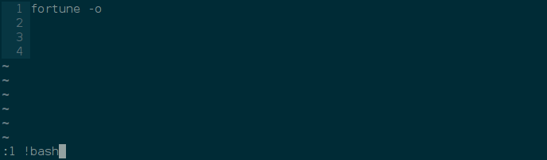
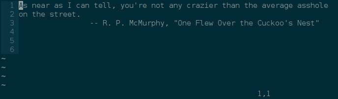
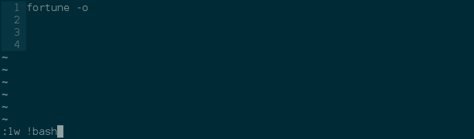
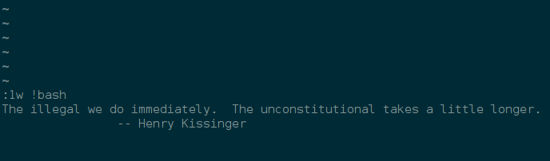
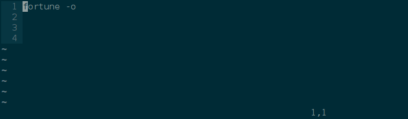

A few days ago I wrote a post how to save history commands to a file. I tinkered with my notes file and wondered how to run the current line in bash. I found multiple solutions but all replaced the current line with the output of the command. Although this can be useful it did not help me. It frustrated me that I could not find a proper solution. I don’t consider myself a vim beginner anymore and somehow I felt stupid. From vimtutor I remebered ! to run external commands. I even looked it up in vimtutor but I could only find :r !date.
The following example runs the current line and replaces it with the output:
:. !bash
Note that the current line is represented by a dot. You can declare a range with 1,5 (line 1 to 5) or .,$ (current line to end of file). You can also use a line number (e.g. “:5 !bash”).
Some screenshots for clarification where I’m running line number 1:

Hit Enter:
 Line number 1 is replaced by the output of the fortune command.
Solution¶
:.w !bash
This stackoverflow-link finally offered the above solution.
Again some screenshots for clarification:

Hit Enter to execute chosen line:

Hit Enter to get back to your unmodified vim buffer:

Note that you can also use !sh instead of !bash to type less and that all examples also work in visual mode.
Vim help¶
Read the vim help:
:help w_c
Copyheart: ♡2016 by Parobalth. Copying is an act of love, please share.